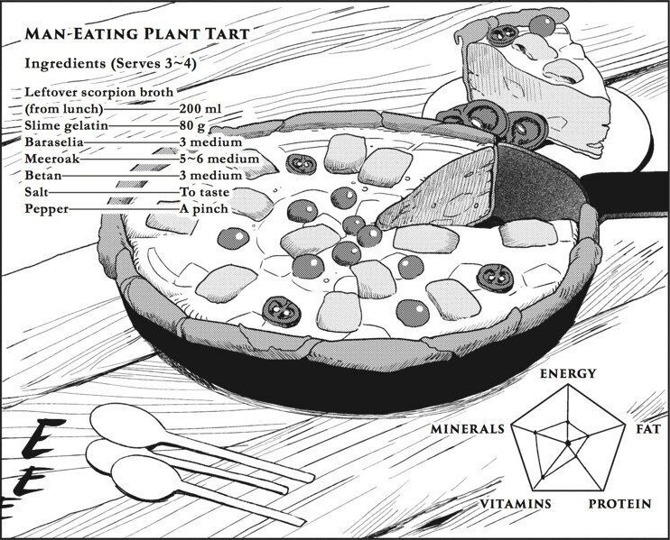

Man-Eating Plant Tart

A nutritious tart made with Man-Eating Plant, rich and vitamins and minerals.
Ingredients
- 200 ml of Scorpion and Slime broth
- 80 g of Slime gelatin
- 3 medium Baraselia
- 5 to 6 medium Meeroak
- 3 medium Betan
- Salt to taste
- A pinch of Pepper
Directions
- Lightly Steam the fruit of the plants, cut around the stem, pull it and the seed should come off easily.
- Remove the peels and pound them until they're soft.
- Cover the bottom of a frying pan with them.
- Mash the unripe fruit and add a little of scorpion broth with slime gelatin.
- Mix everything until it gets sticky.
- Add the rest of the scorpion broth and the chopped fruit.
- Give it a few good stirs until it gets smooth.
- Pour the mixture in the frying pan.
- Heat it for a while.
- Once the surface starts to bubble put the rest of the fruit on top.